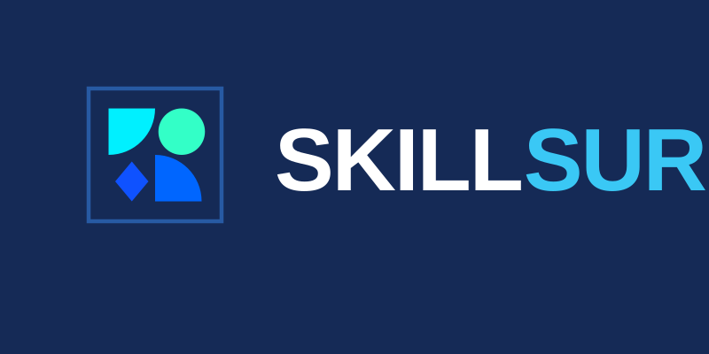

ALORA Bakery
A premium "Zero-Scroll" interactive dashboard for an artisanal bakery. Replacing traditional e-commerce scrolling with app-like state navigation, immersive animations, and dynamic product showcases.
Web AppUI/UXAnimation

SkillSure BETA
A comprehensive Web App for modern skill assessment and certification, built with React and TailwindCSS.
Web AppReactVite
Lumina Residency
A cinematic 3D architectural visualization built with Three.js. Features procedurally generated structures and interactive scroll-based storytelling.
Three.jsGSAPWebGL
Rajiv Gandhi Aviation
A high-fidelity Framer Motion and Next.js landing experience tailored for aviation programs. Focuses on fluid scroll interactivity and responsive typography.
Next.jsFramer MotionTailwind